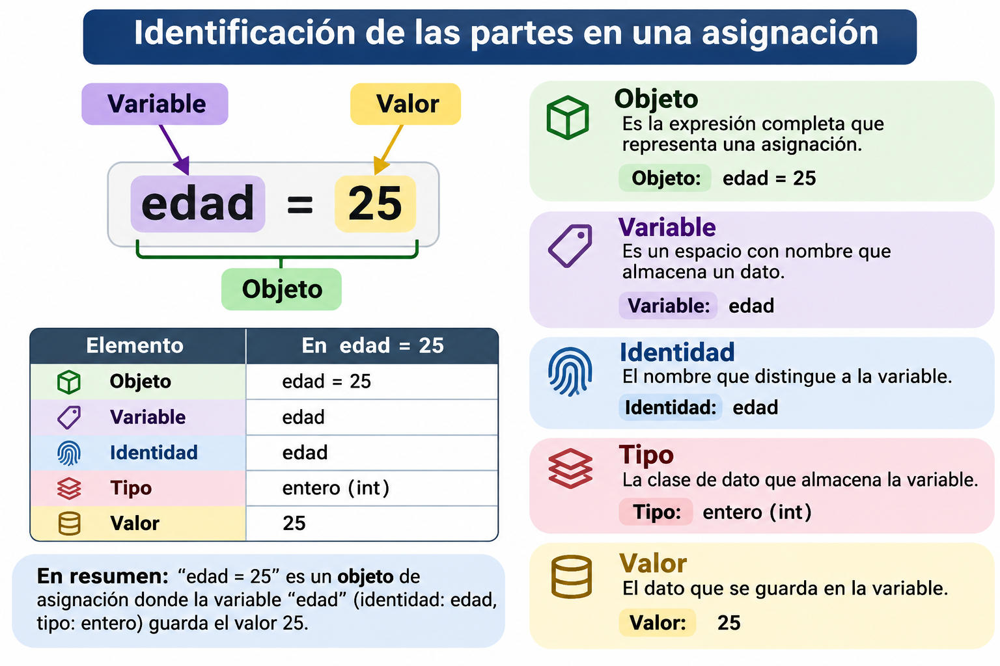

52 🐍 Actividad 1: variables y objetos (tipo, valor e identidad)
Fecha: 03 de noviembre, 2026
Objetivo: Comprender cómo Python trabaja con variables y objetos, identificar el tipo, el valor y la identidad de un objeto, acceder a elementos mediante índices y diferenciar los objetos mutables de los inmutables.
Nivel: Básico.
Instrucciones: Resuelve cada ejercicio completando su código. Antes de ejecutar cada programa, analiza qué resultado esperas obtener. No utilices atributos ni métodos de los objetos (los veremos en el siguiente capítulo); solo puedes emplear funciones integradas como print(), type(), id(), len(), int(), float(), str() y bool().
52.1 ¿Cómo usar los editores de esta página?
Los bloques interactivos ejecutan Python directamente en tu navegador: no necesitas instalar nada. La primera vez puede tardar unos segundos en cargar.
| Botón | ¿Qué hace? |
|---|---|
| Run Code | Ejecuta el código del editor. En algunos ejercicios también revisa tu respuesta y muestra si es correcta. |
| Start Over | Regresa el editor al código inicial. |
| Show Hint | Muestra una pista. |
| Show Solution | Aparece después de ver la pista y muestra la solución. |
Las líneas con ______ son espacios en blanco que debes completar antes de ejecutar el código.
Importante
Lo que escribas en estos editores no se guarda: si recargas la página, se pierde. Si quieres conservar tu código, cópialo en un archivo .qmd, en Google Colab o en Jupyter Notebook.
Pruébalo: modifica el mensaje y presiona Run Code.
52.2 ¿Dónde hacer esta actividad?
Puedes resolver la actividad de cuatro formas. El contenido y los ejercicios son los mismos; elige la que prefieras. También encontrarás los enlaces a cada opción en la barra de la derecha, en Haz esta actividad en…
| A: en este libro | B: en Google Colab | C: en Jupyter Notebook | D: en RStudio (tu .qmd) |
|
|---|---|---|---|---|
| ¿Dónde se ejecuta? | En tu navegador, en esta página. | En una computadora de Google. | En tu computadora. | En tu computadora. |
| ¿Qué necesitas? | Nada, solo el navegador. | Una cuenta de Google. | El entorno quarto-python con Jupyter. |
RStudio y el entorno quarto-python configurado. |
| Archivo | Ninguno. | actividad1.ipynb (en tu Drive). |
actividad1.ipynb |
actividad1.qmd |
| ¿Se guarda tu trabajo? | No: se pierde al recargar la página. | Sí, si guardas una copia en tu Drive. | Sí, en tu computadora. | Sí, en tu computadora (y puedes subirlo a GitHub). |
| ¿Necesita internet? | Solo para cargar la página. | Sí, siempre. | No. | No. |
| Revisión de respuestas | Automática, con Run Code. | Celdas ✅ Verificar. | Celdas ✅ Verificar. | Bloques ✅ Verificar. |
| Resultado final | — | Notebook en Drive. | Notebook .ipynb. |
Documento HTML con Render. |
52.2.1 Opción A. En este libro
Usa los editores interactivos de esta página, como se explica en la sección anterior, ¿Cómo usar los editores de esta página?. Es la opción más rápida, pero tu código no se guarda: si quieres conservarlo, cópialo en otro lugar antes de cerrar la página.
52.2.2 Opción B. En Google Colab

- Da clic en el botón Open in Colab e inicia sesión con tu cuenta de Google.
- Guarda tu propia copia: Archivo > Guardar una copia en Drive. ¡No te saltes este paso! Si trabajas sin guardar una copia, tus cambios se perderán.
- Ejecuta las celdas en orden, de arriba hacia abajo, con el botón ▶ o con
Shift + Enter. - Completa los espacios
______de cada ejercicio y ejecuta la celda.
¿Qué cambia respecto al libro?
| En el libro (Opción A) | En Google Colab (Opción B) |
|---|---|
| Editores con el botón Run Code. | Celdas de código con el botón ▶ (o Shift + Enter). |
| Botones Show Hint y Show Solution. | Bloques 💡 Pista y ✔️ Solución: da clic sobre ellos para desplegarlos. |
| Run Code revisa tu respuesta automáticamente. | Ejecuta tu solución y después la celda ✅ Verificar el ejercicio… |
| Start Over regresa al código inicial. | No existe: si borras algo, consúltalo en el libro o vuelve a abrir el enlace original. |
| Cada editor es independiente. | Todas las celdas comparten las mismas variables: ejecútalas en orden. |
| El código se pierde al recargar la página. | El código se guarda en tu copia de Drive. |
Nota
En los ejercicios con verificación, la última línea de tu código guarda el resultado en la variable respuesta (por ejemplo, respuesta = numero + 5). No borres esa línea: la celda ✅ Verificar revisa esa variable. Si la sesión se desconecta, usa Entorno de ejecución > Ejecutar todas.
52.2.3 Opción C. En Jupyter Notebook (en tu computadora)
Descarga el notebook: 📥 actividad1.ipynb. También puedes verlo en GitHub.
Mueve el archivo a la carpeta donde guardas tus trabajos del curso.
Abre la Terminal, activa tu entorno y abre Jupyter Notebook:
source ~/.venvs/quarto-python/bin/activate jupyter notebooksource ~/.venvs/quarto-python/Scripts/activate jupyter notebookSe abrirá el navegador. Navega hasta la carpeta del archivo y da doble clic en
actividad1.ipynb.Ejecuta las celdas en orden con
Shift + Enter. Tu trabajo se guarda conCtrl/Cmd + S.
Las diferencias con el libro son las mismas que en Google Colab (tabla de la opción B). Además:
- La celda ✅ Verificar muestra su código (en Colab aparece oculto); no necesitas leerlo, solo ejecutarlo.
- No cierres la Terminal mientras usas Jupyter: es el programa que ejecuta tu código. Para terminar, guarda el notebook y presiona
Ctrl + Cen la Terminal. - Si
jupyter: command not found, activa el entorno (paso 3) o consulta el capítulo Configuraciones para usar Quarto con Python.
52.2.4 Opción D. En RStudio, con tu propio archivo .qmd
Esta opción te da tu propio documento de Quarto con toda la actividad: escribes tus respuestas en él, lo guardas en tu carpeta del curso y, al final, lo conviertes en un documento HTML con Render. Es la mejor opción si quieres entregar tu actividad o guardarla en tu repositorio de GitHub.
Requisito: haber configurado tu entorno en el capítulo Configuraciones para usar Quarto con Python (pasos 1 a 6).
Descarga el archivo: 📥 actividad1.qmd.
Muévelo a la carpeta de tu proyecto de RStudio del curso y ábrelo con File > Open File…
En el encabezado (YAML), cambia
Tu nombrepor tu nombre:--- title: "🐍 Actividad 1: variables y objetos (tipo, valor e identidad)" author: "Tu nombre" format: html jupyter: python3 execute: error: true # Muestra los errores sin detener el documento ---Ejecuta los bloques en orden con el botón ▶ de cada bloque (o
Cmd/Ctrl + Shift + Enter). El resultado aparece debajo de cada bloque.Completa los espacios
______y ejecuta los bloques ✅ Verificar después de tu solución.Guarda tus cambios (
Cmd/Ctrl + S) y, al terminar, presiona Render para generaractividad1.htmlcon todas tus respuestas y resultados.
| Elemento del YAML | ¿Para qué sirve? |
|---|---|
jupyter: python3 |
Usa el motor Jupyter con el Python de QUARTO_PYTHON al presionar Render. |
execute: error: true |
Si un bloque tiene un error (por ejemplo, un ______ sin completar), el documento sí se genera y muestra el error en lugar de detenerse. |
Tip¿Y si quiero empezar mi propio
.qmd desde cero?
También puedes crear un documento nuevo con File > New File > Quarto Document…, poner el YAML de arriba y copiar ahí los ejercicios que quieras. Así practicas lo que aprendiste en el Paso 7 del capítulo de configuración.
Advertencia
Si al ejecutar un bloque aparece ModuleNotFoundError o NameError: name '______' is not defined:
NameErrorcon______significa que todavía no completaste ese espacio: es normal.ModuleNotFoundErrorindica un problema de configuración: consulta la solución de problemas del capítulo de configuración.
52.3 Repaso: objeto y variable
52.3.1 Abrir Python en RStudio: repl_python()
Además de los editores de esta página, puedes hacer los ejercicios en RStudio. Como vimos en el capítulo Introducción a Python en Rstudio usando reticulate, la función repl_python() abre una consola interactiva de Python dentro de la Console de RStudio:
En la Console, carga
reticulatey abre Python:Código
library(reticulate) repl_python()El indicador de la Console cambia de
>(R) a>>>(Python). Ahora puedes escribir código de Python, una instrucción a la vez:edad = 20 print(type(edad)) # Muestra: <class 'int'>No escribas el símbolo
>>>: lo agrega la Console automáticamente.Para regresar a R, escribe
exit(oquit) y presionaEnter. El indicador vuelve a ser>.
| Indicador de la Console | Lenguaje activo | ¿Cómo cambiar? |
|---|---|---|
> |
R | repl_python() para pasar a Python. |
>>> |
Python | exit para regresar a R. |
Tip
- Las variables que crees en
repl_python()se conservan al regresar a R; puedes usarlas desde R conpy$nombre_variable. - Para guardar tu trabajo, es mejor escribir el código en un documento de Quarto (
.qmd) con bloques{python}y ejecutarlos conCmd/Ctrl + Enter: RStudio abrerepl_python()automáticamente. - Si aparece
ModuleNotFoundErroro la consola usa otro Python, revisa la configuración del capítulo Configuraciones para usar Quarto con Python.
52.3.2 ¿Qué es un objeto?
En Python, todo es un objeto: un número, un texto, una lista. Un objeto es un dato guardado en la memoria de la computadora, y siempre tiene tres características:
| Característica | Pregunta que responde | ¿Cómo se consulta? | ¿Puede cambiar? |
|---|---|---|---|
| Tipo | ¿Qué clase de dato es? | type(x) |
Nunca. |
| Valor | ¿Qué información contiene? | print(x) |
Solo si el objeto es mutable. |
| Identidad | ¿Cuál objeto es, de todos los que hay en memoria? | id(x) |
Nunca, mientras el objeto exista. |
Código
edad = 20
print(type(edad)) # Tipo<class 'int'>Código
print(edad) # Valor20Código
print(id(edad)) # Identidad4584440352La identidad es un número único que Python asigna a cada objeto mientras existe (en la práctica, su dirección en la memoria). Tu número será diferente al de esta página y puede cambiar cada vez que ejecutes el programa; lo importante es comparar identidades, no memorizarlas.
52.3.3 ¿Qué es una variable?
Una variable es un nombre que hace referencia a un objeto. La variable no “contiene” el dato: es como una etiqueta pegada a una caja. La caja es el objeto.

Cuando escribimos:
Código
x = 25Python hace dos cosas:
- Crea un objeto de tipo
intcon valor25. - Crea el nombre
xy lo hace referenciar a ese objeto.
| Objeto | Variable | |
|---|---|---|
| ¿Qué es? | El dato guardado en memoria. | Un nombre que apunta al objeto. |
| ¿Tiene tipo? | Sí, el tipo pertenece al objeto. | No, la variable solo apunta. |
| ¿Tiene identidad? | Sí, id() es la del objeto. |
No, id(x) regresa la identidad del objeto al que apunta x. |
| Ejemplo | 25 |
x |
Por eso una misma variable puede apuntar a objetos de distinto tipo (tipado dinámico):
Código
x = 25
print(type(x))<class 'int'>Código
x = "veinticinco" # x ahora apunta a otro objeto
print(type(x))<class 'str'>Y un mismo objeto puede tener varios nombres:
Código
a = [1, 2, 3]
b = a # b NO es una copia: es otra etiqueta para el mismo objeto
print(id(a))4561773696Código
print(id(b))4561773696Código
print(a is b) # ¿Son el mismo objeto?TrueSi queremos un objeto nuevo con el mismo valor, hay que copiarlo. Una forma es a.copy(), un método de las listas que veremos a detalle en la 🐍 Actividad 2:
Código
a = [1, 2, 3]
b = a.copy() # b es un objeto NUEVO con el mismo valor
print(id(a))4554782208Código
print(id(b))4563466816Código
print(a is b) # ¿Son el mismo objeto?FalseCódigo
print(a == b) # ¿Tienen el mismo valor?True| Instrucción | ¿Crea un objeto nuevo? | Si modificas b, ¿cambia a? |
|---|---|---|
b = a |
No: b es otro nombre para el mismo objeto. |
Sí |
b = a.copy() |
Sí: un objeto nuevo con el mismo valor. | No |
52.3.4 Comparar valor e identidad: == vs is
| Operador | ¿Qué compara? | Ejemplo |
|---|---|---|
== |
Si dos objetos tienen el mismo valor. | a == b |
is |
Si dos nombres apuntan al mismo objeto (misma identidad). | a is b |
Código
lista1 = [1, 2, 3]
lista2 = [1, 2, 3]
print(lista1 == lista2) # Mismo valorTrueCódigo
print(lista1 is lista2) # Pero son objetos distintosFalse
Nota
Para comparar números y textos usa siempre ==. Por optimización, Python a veces reutiliza el mismo objeto para números pequeños o textos cortos, así que is puede dar resultados que parecen sorprendentes.
52.3.5 Índices
En las cadenas, listas y tuplas cada elemento tiene una posición llamada índice. En Python los índices empiezan en 0, y los índices negativos cuentan desde el final.
Cadena: P y t h o n
Índice: 0 1 2 3 4 5
Negativo: -6 -5 -4 -3 -2 -1Código
palabra = "Python"
print(palabra[0]) # Primer elementoPCódigo
print(palabra[-1]) # Último elementonCódigo
print(palabra[0:3]) # Del índice 0 al 2 (el 3 no se incluye)PytCódigo
print(len(palabra)) # Número de elementos652.3.6 Mutables e inmutables
- Mutable: su valor puede cambiar sin crear un objeto nuevo (la identidad se conserva). Ejemplos:
list,dict,set. - Inmutable: su valor no puede cambiar. Si “modificamos” la variable, en realidad se crea un objeto nuevo. Ejemplos:
int,float,str,tuple,bool.
Código
numeros = [10, 20, 30]
print(id(numeros))4563402048Código
numeros[0] = 100 # Modificamos el objeto
print(numeros)[100, 20, 30]Código
print(id(numeros)) # Misma identidad: es el mismo objeto4563402048Código
x = 25
print(id(x))4584440512Código
x = x + 1 # Se crea un objeto nuevo con valor 26
print(id(x)) # Identidad distinta458444054452.4 Parte I. Tipo y valor
52.4.1 Ejercicio 1. Mi primera colección de variables
Crea un programa que almacene la siguiente información:
- Nombre de un estudiante.
- Edad.
- Estatura en metros.
- Si está inscrito en la universidad (
TrueoFalse).
Después, muestra cada variable junto con su tipo de dato utilizando type().
NotaPista
Puedes mostrar varios elementos en un mismo print() separándolos con comas: print(nombre, "es:", type(nombre)).
TipSolución
nombre = "Ana"
edad = 19
estatura = 1.65
inscrito = True
print(nombre, "es:", type(nombre))
print(edad, "es:", type(edad))
print(estatura, "es:", type(estatura))
print(inscrito, "es:", type(inscrito))52.4.2 Ejercicio 2. Cadenas de caracteres
A partir de las variables nombre y apellido:
- Crea la variable
completouniendo ambas cadenas con un espacio en medio (usa+). - Muestra la primera letra del nombre y la última letra del apellido usando índices.
- Muestra el número de caracteres de
completoconlen().
NotaPista
El espacio también es una cadena: " ". Recuerda que el primer índice es 0 y el último es -1.
TipSolución
nombre = "Ana"
apellido = "López"
completo = nombre + " " + apellido
print(completo)
print(nombre[0])
print(apellido[-1])
print(len(completo)) # 9: el espacio también cuenta52.4.3 Ejercicio 3. ¿Mismo valor, distinto tipo?
Observa estas dos variables. Ejecuta el código y responde: ¿por qué a + a y b + b dan resultados diferentes?
Después, convierte b a número entero con int() y calcula b + 5. El resultado debe ser 25.
NotaPista
Con números, + suma; con cadenas, + une (concatena). El tipo del objeto determina qué hace la operación. Para convertir usa int(b).
TipSolución
a = 20
b = "20"
print(type(a), a + a) # <class 'int'> 40
print(type(b), b + b) # <class 'str'> 2020
numero = int(b)
numero + 5 # 25a y b “se ven” iguales, pero son objetos de tipos distintos, por lo que la misma operación se comporta diferente.
52.4.4 Ejercicio 4. Conversión de tipos
Predice el resultado de cada conversión y después ejecuta el código para comprobarlo. ¿Cuál produce un error y por qué?
NotaPista
int() no redondea: elimina la parte decimal. bool() regresa False para 0 y para la cadena vacía "".
TipSolución
print(float(7)) # 7.0
print(int(3.99)) # 3, se elimina la parte decimal
print(str(2026)) # '2026', ahora es texto
print(bool(0)) # False
print(bool("hola")) # True
print(int("tres")) # ValueErrorint("tres") produce un ValueError: Python solo puede convertir a número un texto que contenga dígitos, como "3".
52.5 Parte II. Identidad: objeto y variable
52.5.1 Ejercicio 5. La identidad de un objeto
- Crea la variable
xcon valor100y muestra su identidad conid(). - Reasigna
x = 200y muestra de nuevo su identidad. - Responde: ¿cambió el objeto
100o cambió la variablex?
NotaPista
id(x) regresa la identidad del objeto al que apunta x en ese momento.
TipSolución
x = 100
print("Identidad 1:", id(x))
x = 200
print("Identidad 2:", id(x))Las identidades son diferentes. El objeto 100 no cambió: la variable x dejó de apuntar al objeto 100 y ahora apunta a un objeto nuevo, 200.
52.5.2 Ejercicio 6. Dos nombres, un objeto
Ejecuta el código. ¿Por qué cambió también original si solo modificamos otra? Compruébalo comparando sus identidades con id() y con is.
NotaPista
otra = original no crea una lista nueva. Compara id(original) == id(otra) u original is otra.
TipSolución
original = [1, 2, 3]
otra = original
otra[0] = 99
print("original:", original)
print("otra:", otra)
print(id(original) == id(otra)) # True
print(original is otra) # TrueHay un solo objeto con dos nombres. Al modificar el objeto a través de otra, el cambio también se ve desde original.
Para comparar: ¿y si usamos .copy()?
Observa qué cambia cuando, en lugar de otra = original, creamos una copia con original.copy(). Ejecuta el código y compara las identidades. Después prueba a modificar referencia y copia con otros valores.
referencia = original |
copia = original.copy() |
|
|---|---|---|
¿Mismo objeto que original? |
Sí (misma identidad) | No (identidad distinta) |
¿El cambio se ve en original? |
Sí: original[0] ahora vale 99. |
No: original[1] sigue valiendo 2. |
copy() es un método de las listas: por eso se escribe con punto y paréntesis. Lo usaremos en el ejercicio 7 de la 🐍 Actividad 2, junto con otros métodos.
52.5.3 Ejercicio 7. ¿Mismo valor o mismo objeto?
Completa el código usando == e is para responder:
- ¿
lista_aylista_btienen el mismo valor? - ¿
lista_aylista_bson el mismo objeto? - ¿
lista_aylista_cson el mismo objeto?
NotaPista
== compara el valor; is compara la identidad.
TipSolución
lista_a = [5, 10, 15]
lista_b = [5, 10, 15]
lista_c = lista_a
print("¿a y b tienen el mismo valor?", lista_a == lista_b) # True
print("¿a y b son el mismo objeto?", lista_a is lista_b) # False
print("¿a y c son el mismo objeto?", lista_a is lista_c) # True52.6 Parte III. Índices, objetos mutables e inmutables
52.6.1 Ejercicio 8. Índices en listas y tuplas
A partir de la lista primos y la tupla punto:
- Muestra el primer y el último elemento de
primos. - Muestra los elementos de
primosdel índice 1 al 3 (incluido): debe mostrar[3, 5, 7]. - Muestra la segunda coordenada de
punto. - En la última línea escribe la expresión que obtiene el último elemento de
primos(debe ser11).
Nota¿Por qué
primos[1:4] y no primos[1:3]?
En un rango lista[inicio:fin], Python incluye el índice inicio pero no incluye el índice fin. Por eso, para llegar hasta el índice 3, el final del rango debe ser 4:
| Índice | 0 | 1 | 2 | 3 | 4 |
|---|---|---|---|---|---|
primos |
2 | 3 | 5 | 7 | 11 |
primos[1:3] # [3, 5] → índices 1 y 2 (el 3 NO se incluye)
primos[1:4] # [3, 5, 7] → índices 1, 2 y 3Es la misma regla de range(1, 4), que genera 1, 2 y 3. Una forma de recordarlo: fin - inicio es el número de elementos del resultado (4 - 1 = 3 elementos).
NotaPista
Para incluir el índice 3 en un rango, el final debe ser 4: primos[1:4]. El último elemento es primos[-1].
TipSolución
primos = [2, 3, 5, 7, 11]
punto = (3, -2)
print(primos[0]) # 2
print(primos[1:4]) # [3, 5, 7]
print(punto[1]) # -2
primos[-1] # 11Una tupla es ideal para guardar un punto \((x, y)\): sus coordenadas no deberían cambiar por accidente, porque las tuplas son inmutables.
52.6.2 Ejercicio 9. Modificar un objeto mutable
- Muestra la identidad de la lista
calificaciones. - Cambia la segunda calificación por
10usando su índice. - Muestra la lista y su identidad otra vez. ¿Es el mismo objeto?
NotaPista
La segunda calificación está en el índice 1: calificaciones[1] = 10.
TipSolución
calificaciones = [8, 6, 9]
print("Antes:", calificaciones, id(calificaciones))
calificaciones[1] = 10
print("Después:", calificaciones, id(calificaciones))La identidad es la misma: modificamos el valor del objeto sin crear uno nuevo, porque las listas son mutables.
52.6.3 Ejercicio 10. Intentar modificar un objeto inmutable
- Ejecuta el código: intenta cambiar la primera letra de
animalpor"g". ¿Qué error obtienes? - Comenta la línea del error (agrega
#al inicio) y, en su lugar, crea una cadena nueva"gato"uniendo"g"conanimal[1:], y guárdala en la misma variable. - Compara la identidad antes y después. ¿Es el mismo objeto?
NotaPista
animal[1:] regresa "ato". Puedes escribir animal = "g" + animal[1:].
TipSolución
animal = "pato"
print("Antes:", animal, id(animal))
# animal[0] = "g" # TypeError: 'str' object does not support item assignment
animal = "g" + animal[1:]
print("Después:", animal, id(animal))Las cadenas son inmutables: no podemos cambiar una letra. Lo que sí podemos hacer es crear un objeto nuevo ("gato") y hacer que la variable animal apunte a él. Por eso la identidad cambia.
52.7 Resumen
| Concepto | Descripción | Función u operador |
|---|---|---|
| Objeto | Dato guardado en memoria, con tipo, valor e identidad. | |
| Variable | Nombre que hace referencia a un objeto. | = |
| Tipo | Qué clase de dato es el objeto. | type() |
| Valor | La información que contiene el objeto. | print() |
| Identidad | Número único del objeto mientras existe. | id() |
| Mismo valor | Compara valores. | == |
| Mismo objeto | Compara identidades. | is |
| Mutable | Su valor puede cambiar, conserva su identidad. | list, dict, set |
| Inmutable | Su valor no cambia; “modificarlo” crea un objeto nuevo. | int, float, str, tuple, bool |
52.8 Referencias
- Documentación de Python: Modelo de datos (objetos, valores y tipos)
- Documentación de Python: Funciones integradas
- Quarto Live: ejercicios interactivos